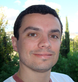
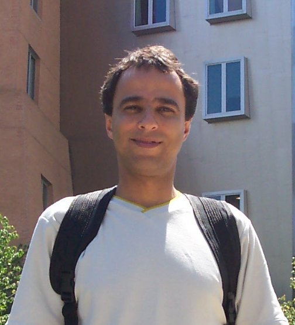

Palestras
Palestra I: Como Utilizar Computação de Alto Desempenho na Nuvem
Alex Coqueiro
Arquiteto de Soluções para o Setor Público para América Latina, Caribe e Canada - AMAZON
Auditório João Calvino - 03/08 (Quarta-Feira) - 16:30 às 17:30

Resumo: A computação de alto desempenho (HPC) vem tendo papel fundamental na resolução de problemas complexos de ciência, engenharia e negócios usando uma infra-estrutura que demanda capacidade de computação muito alta. Nesta palestra será compartilhado como diversas entidades de pesquisa em âmbito global tem adotado soluções de nuvem permitindo aumentar a velocidade da pesquisa executando computação de alto desempenho na nuvem e reduzir custos fornecendo servidores de computação em cluster ou GPU de cluster sob demanda sem grandes investimentos de capital. Serão apresentados técnicas de rede totalmente bissecionada e de alta largura de banda para cargas de trabalho altamente acopladas e de I/O intensiva, o que permite aumentar a escala até milhares de núcleos para aplicações orientadas à grande necessidade de performance.

Palestra II: HPC na Pesquisa de Finanças
Eli Hadad Junior
Observatório de Finanças
Universidade Presbiteriana Mackenzie
Auditório João Calvino - 03/08 (Quarta-Feira) - 17:30 às 18:30
Palestra III: Sistemas Distribuídos para o Controle de Telescópios. SST e LLAMA: Comparações e Experiências
Guillermo Giménez de Castro
Centro de Rádio Astronomia e Astrofísica Mackenzie (CRAAM)
Universidade Presbiteriana Mackenzie
Auditório João Calvino - 04/08 (Quinta-Feira) - 16:30 às 17:30

Resumo: Os telescópios modernos, cada vez mais poderosos em sua capacidade observacional, são também sistemas cada vez mais complexos. A complexidade se dá pelo grande número de sistemas que precisam ser controlados simultaneamente e em tempo real. Hoje em dia, o controle completo dos telescópios se realiza por meio de computadores, e, mesmo que os computadores aumentem a sua capacidade de processamento, faz-se necessário adotar uma política de divisão coordenada das tarefas, ou seja, processamento distribuído. Analisamos aqui dois casos concretos cujos design, construção e operação estamos diretamente envolvidos: o Telescópio Solar para Ondas Submilimétricas (SST por sua sigla em inglês) e o Large Latin American Millimeter Array (LLAMA). O SST foi desenvolvido nos anos 90 e opera ininterruptamente desde o ano 2001. LLAMA está atualmente em construção e se espera comece a observar em 2018. Ambos os instrumentos trabalham numa faixa semelhante de frequências do espectro eletromagnético, e têm modos de operação parecidos. Em termos de software de controle, a filosofia é parecida, mas as tecnologias adotadas diferem substantivamente. O sistema de controle do SST é baseado no sistema oparacional "hard real time" QNX, fazendo uso de seu "low latency micro-kernel", "message queuing" e memórias compartilhadas para coordenar a atividade de dezenas de diferentes processos escritos em linguagem C, que vão desde o cálculo das efemérides astronômicas até a leitura e armazenamento de dados digitais. No caso de LLAMA, ele se baseia em uma distribuição Red Hat Linux, junto com o módulo de kernel Real Time Aplication Interface (RTAI), e usa o modelo de contâiner / componente, adotando CORBA como "middleware", para a coordenação dos diferentes processos desenvolvidos nas linguagens C++, Java e Python.
Palestra IV: Rede SINAPAD e o Supercomputador Petaflópico SDumont
Antonio Tadeu Azevedo Gomes (LNCC)
Auditório João Calvino - 04/08 (Quinta-Feira) - 17:30 às 18:30
Resumo: Nesta palestra, apresentamos as principais iniciativas de e-Ciência sendo realizadas dentro da rede SINAPAD, um programa do Ministério da Ciência, Tecnologia e Inovação que visa oferecer serviços de HPC para a comunidade científica brasileira. Vamos começar a palestra apresentando os recursos disponíveis no SINAPAD, seu perfil de uso e limitações atuais. Continuamos com a apresentação de alguns serviços de e-Ciência que estão sendo oferecidos dentro do SINAPAD para lidar com algumas dessas limitações e alavancar a qualidade da experiência dos usuários. Apresentamos também o Supercomputador SDumont do LNCC, maior recurso de HPC inteiramente destinado a “Open Science" na América Latina, incluindo sua arquitetura e os requisitos esperados pelas aplicações candidatas a executar no mesmo. Concluímos a palestra apresentando as ações de médio e longo prazo que estão sendo planejadas no SINAPAD visando expandir consideravelmente sua capacidade de e-Ciência, não só para HPC, mas também para Big Data.
Palestra V: Energy-Efficient Parallel Software
Samuel Xavier de Souza (UFRN)
Auditório da Escola Americana - 05/08 (Sexta-Feira) - 11:30 às 12:30

Resumo: The growth rate of power dissipation has played an important role in the way computational performance has been sustaining growth. The thermal limitations imposed by the power wall made parallelism an essential part of any scalable computation. Although power remains a concern, energy consumption is generally second to performance as application design goal due to the absence of general programming tools aiming to improve energy efficiency. Researchers attempt to fill this gap by enabling programmers to target energy consumption as a primary design goal by delivering static energy consumption estimation from the compiler's point of view. However, for some more complex computations, runtime optimization of the energy efficiency can be crucial. We present ongoing research that targets such runtime approach aiming to allow the programmer to find optimal runtime configurations based on the profiling of parallel performance metrics and on the frequency-power relationship. The symbiotic relationship between static and runtime approaches should boost capabilities and allow programmers to write applications that are up to one order of magnitude more energy efficient. This would not only have a large impact on battery life, in embedded systems, and energy bills, in HPC systems, but also would make energy harvesting more usable, becoming one the key mechanisms to allow zero-energy Internet of Things.
Palestra VI: Computação Paralela e Eu
Alfredo Goldman (IME-USP)
Auditório João Calvino - 05/08 (Sexta-Feira) - 16:30 às 17:30
Resumo: Quando iniciei minha pesquisa em 1992 havia um grande interesse em redes de interconexão e computação paralela só era possível em máquinas dedicadas. Recentemente, tivemos algumas mudanças de paradigma, onde por vezes a computação de alto desempenho está completamente relacionada a sistemas distribuídos. Traga as suas dúvidas e comentários para discussão!